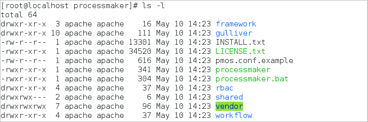

- Overview
- Step 1: Installing Apache, MySQL and PHP
- Step 2: Configuring PHP Settings
- Step 3: Download & Extract ProcessMaker
- Step 4: MySQL Configuration
- Step 5: Apache Configuration
- VirtualHost in Apache 2.2
- VirtualHost in Apache 2.4
- Enable Apache modules
- Apache Possible Configuration Issues
- Step 6: Configure SELinux
- Step 7: Setting up ProcessMaker
- Step 8: Additional Configuration
- Errors during Installation
Overview
Follow these instructions to install ProcessMaker 3.0 or later in CentOS or Red Hat Enterprise Linux.
| ProcessMaker Version | Platform | Notes |
|---|---|---|
| ProcessMaker 3.0 - 3.0.1.6 | CentOS/RHEL 6 or 7 | |
| ProcessMaker 3.0.1.7 - 3.0.1.8 | CentOS/RHEL 6 | For 3.0.1.7 PHP needs to be upgraded to version 5.4 or 5.5 For 3.0.1.8, PHP needs to be upgraded to version 5.5.33+ or 5.6. |
| ProcessMaker 3.0.1.8 - 3.0.4 | CentOS/RHEL 7 | Stack 200 |
| Note: If installing ProcessMaker 3.0.1.8 or ProcessMaker 3.0.2 on CentOS 7, please follow the instructions of our supported Stack 200 to install Apache, MySQL and PHP. Then, continue with Step 2 and next steps of this guide. |
Before installing ProcessMaker, check the Installation Requirements to determine whether your server meets the necessary hardware and software requirements. Ensure you have an Internet connection to download any necessary third-party components that your ProcessMaker installation might require.
Step 1: Installing Apache, MySQL and PHP
| Warning: ProcessMaker is not compatible with MySQL STRICT mode, which is enabled by default as of MySQL 5.6.6. Read the Turning Off MySQL STRICT Mode section to learn how to disable it. |
To install Apache, MySQL or PHP, first switch to the root user:
Then use yum to install Apache, MySQL and PHP:
Follow the instructions on the screen to install the Apache web server.
Next, install the PHP modules needed by ProcessMaker:
php-mcrypt is not in the standard repositories for RHEL/CentOS 6 and 7. However, it is in Fedora's EPEL repository.
Install the EPEL Repo for RHEL/CentOS 6:
32 bit:
64 bit:
Or the EPEL Repo for RHEL/CentOS 7:
64 bits:
Then it is possible to execute:
To check if all the PHP modules were installed, run the following command:
In addition, phpMyAdmin can be installed to easily view the MySQL databases used by ProcessMaker inside a web browser. For some versions of RHEL/CentOS, phpMyAdmin will need to be manually installed.
Step 2: Configuring PHP Settings
The default configuration of PHP should be able to run ProcessMaker, however, check the following settings if PHP's configuration file php.ini has been modified.
Login as root and edit PHP's configuration file php.ini:
Each ProcessMaker session needs a minimum of 128MB RAM to run properly, so set the memory_limit to 128M or greater:
Note: After installation, the same value for the memory_limit should be set in the ProcessMaker interface by going to Admin > Settings > System (or in the env.ini file).
file_uploads and short_open_tag need to be enabled:
If planning on uploading large files, as Input Documents while running processes, post_max_size and upload_max_filesize should be increased to more than the default 2MB. For instance, if planning on uploading files as large as 24MB, then:
It is also recommended to set the date.timezone to a your time zone, especially if using timer events in the Enterprise Edition. See this list of supported time zones.
Note: After installation, the same time zone should be set in the ProcessMaker interface by going to Admin > Settings > System and setting the Time Zone (or in the env.ini file).
To avoid viewing unnecessary warning messages in the @@__ERROR__ system variable in the debugger, it is recommended to turn off deprecated and strict warnings:
Note: It is recommended the following configuration if there is a production environment.
These configurations also can be applied or not to the env.ini file.
Step 3: Download & Extract ProcessMaker
Go to ProcessMaker's SourceForge page and download a recent tarball of ProcessMaker, which should be named processmaker-X.X.X.X-community.tar.gz.
After the download has finished, decompress the tarball in the directory where ProcessMaker will be installed. ProcessMaker can be installed in any directory which is not publicly accessible to the internet (so do NOT install it in /var/www), but it is generally installed in /opt, since it is an optional program which doesn't come from the standard repositories:
Verify that ProcessMaker was correctly decompressed:
The processmaker directory should contain the following content:
Set file permissions
Then, issue the following commands as the "root" user so that ProcessMaker can access the necessary files when run by the Apache server:
In CentOS by default the Apache service runs as the user apache. Therefore, the ownership of the ProcessMaker directory must belong to apache, so that Apache can read and write data. The -R makes the ownership changes recursive (apply to all files and directories within /opt/processmaker).
After these changes, verify the permissions and owner of the processmaker directory with the command ls -l.

Step 4: MySQL Configuration
Before using MySQL, use the mysql_secure_installation command to set up a secure database environment. Login as the "root" user and issue the following command:
Then follow the wizard to secure MySQL:

Here it is necessary to enter root password:

Then it is possible to change root password:
Warning: ProcessMaker does NOT support special characters (such as: @ # $ % ^ & ( /) in the root password. For more information, please read this section.

Then, it will ask about removing anonymous users:

Then it will ask about disabling root login:

Then, it is possible to change MySql database name:

Finally, reload privileges tables:

Warning: When MySQL is installed in RHEL/CentOS 7, the strict mode is enabled by default which causes ProcessMaker to not work properly. Follow these instructions to disable the strict mode in MySQL so that ProcessMaker works correctly.
User other than root
The MySQL "root" user should already have all the necessary privileges to setup the ProcessMaker databases. If planning on using a MySQL user other than "root" to set up the ProcessMaker databases, then follow the steps below to grant superuser privileges to a MySQL user in order to create and update databases. Login to MySQL:
Enter the root password for MySQL.
Once in MySQL, give the user which will be running ProcessMaker superuser privileges to create create and modify MySQL databases:
Replace USER with the name of your MySQL user and PASSWORD with the password for that user. (If that user doesn't already exist, he/she will be automatically created with the above grant command. If you are running ProcessMaker on a different server than your MySQL server, then replace localhost with the domain name or IP address of the server where ProcessMaker is located.
Exit MySQL:
MySQL Possible Configuration Issues
Setting the root Password
If MySQL doesn't have a root password, set one for better security:
If you have forgotten the root password, see these instructions to reset it.
Starting as a Service
When logging into MySQL, if the following error message appears:
Then, MySQL needs to be started as a service:
If MySQL was installed from its RHEL/CentOS package, it should automatically start as a service on bootup. If not, then use use chkconfig to add it as a service:
MySQL Password with Special Characters
The following error is displayed during the ProcessMaker installation when the MySQL password contains a character that is not a letter or a number, like: @ # $ % ^ & ( /.
Please change/reset your MySQL password and try to install ProcessMaker again. This is a known issue that will be fixed in ProcessMaker 3.2.
Step 5: Apache Configuration
First, disable the apache welcome page with the following command:
Then, copy the sample ProcessMaker configuration file to Apache's conf.d directory:

Edit the pmos.conf file to fit your environment:
The Apache configuration to run ProcessMaker depends on the version of Apache.
If using RHEL/CentOS 6, then configure a VirtualHost in Apache 2.2.
If using RHEL/CentOS 7, then configure a VirtualHost in Apache 2.4.
VirtualHost in Apache 2.2
If using Apache 2.2, then use the following VirtualHost configuration. In the pmos.conf file, replace your_ip_address and your_processmaker_domain with the IP address and domain name used by your ProcessMaker server:
Replace your_ip_address with the IP number or domain name of the server running ProcessMaker. If only planning on running and accessing ProcessMaker on your local machine, then use the IP address "127.0.0.1". If using ProcessMaker on a machine whose IP address might change (such as a machine whose IP address is assigned with DHCP), then use "*", which represents any IP address. If not using the standard port 80, then it is necessary to also specify the port number.
If your DNS or /etc/hosts has a defined domain for ProcessMaker, then use that domain for your_processmaker_domain. Otherwise, use the same IP address for your_processmaker_domain as was used for your_ip_address. For more information, see the Apache Virtual Hosts Documentation.
Note: It is also possible to define the virtual host for ProcessMaker directly in the Apache configuration by inserting the above VirtualHost definition in the /etc/httpd/conf/httpd.conf file.
Example 1:
ProcessMaker is installed in the /opt/processmaker directory and is running on a server at the address 192.168.1.100:
Example 2:
ProcessMaker is installed in the /user/fred directory on your local machine at port 8080 with an dynamic IP assigned by DHCP:
Example 3:
ProcessMaker is installed in the /opt/pm3.0.1.7 directory at the IP address 123.45.67.89 and the domains www.example.com and any variant of X.example.com:
Note that www.example.com and *.example.com need to be defined in the server's DNS or /etc/hosts file for this example to work correctly.
VirtualHost in Apache 2.4
If using Apache 2.4, then use the following VirtualHost configuration. In the pmos.conf file, replace your_ip_address and your_processmaker_domain with the IP address or domain name used by your ProcessMaker server:
Replace your_ip_address with the IP number or domain name of the server running ProcessMaker. If only planning on running and accessing ProcessMaker on your local machine, then use the IP address "127.0.0.1". If using ProcessMaker on a machine whose IP address might change (such as a machine whose IP address is assigned with DHCP), then use *, which represents any IP address. If not using the standard port 80, then it is necessary to also specify the port number.
If your DNS or /etc/hosts has a defined domain for ProcessMaker, then use that domain for your_processmaker_domain. Otherwise, use the same IP address for your_processmaker_domain as was used for your_ip_address. For more information, see the Apache Virtual Hosts Documentation.
Note: It is also possible to define the virtual host for ProcessMaker directly in the Apache configuration by inserting the above VirtualHost definition in the file /etc/httpd/conf/httpd.conf.
Example 1:
ProcessMaker is installed in the /opt/processmaker directory and is running on a server at the address 192.168.1.100:
Example 2:
ProcessMaker is installed in the /user/fred directory on your local machine at port 8080 with an dynamic IP assigned by DHCP:
Example 3:
ProcessMaker is installed in the /opt/pm3.0.1.7 directory at the IP address 123.45.67.89 and the domains www.example.com and any variant of X.example.com:
Note that www.example.com and *.example.com need to be defined in the server's DNS or /etc/hosts file for this example to work correctly.
Enable Apache modules
ProcessMaker needs to use the expires, rewrite, deflate and vhost_alias modules in the Apache web server. Check to see whether these modules are enabled, by opening the Apache configuration file found at /etc/httpd/conf/httpd.conf. The following 4 lines should be found in the list of Apache modules to load:
If working with CentOS 7, the file to configure modules is found at:
/etc/httpd/conf.modules.d/00-base.confNote: If using Apache 2.4 (which is found in CentOS/Red Hat 7), either include the filter module:
Or remove the following line from pmos.conf:
After editing the pmos.conf or httpd.conf files, it is necessary to restart the Apache web server to use the new configuration:
Apache Possible Configuration Issues
Setting Apache as Service
If Apache is not already running as a service, then configure it to automatically start as a service when booting up:
No ServerName Warning
If a similar warning message appears when restarting Apache:
Then, the ServerName needs to be set for Apache. Edit the httpd.conf file and add the line:
For instance, if running ProcessMaker from the local machine, then:
Non-standard Port
If running ProcessMaker off a port other than the default port 80, then add the following line to the httpd.conf file:
For instance, if running ProcessMaker from the local machine at port 8080:
Or simply:
Note: If Apache is using the default port 80, then configure other programs to not use port 80. Check whether a program is currently listening on port 80 with the command:
Step 6: Configure SELinux
If ProcessMaker is installed in the /opt directory, it is necessary to either configure SELinux to allow Apache to read/write to the directory where ProcessMaker is installed or simply disable SELinux.
Configuring SELinux
To configure SELinux, so that Apache can read/write to the /opt/processmaker directory. first login as "root" and issue the following commands from the terminal:
Then, configure Apache so it is able to send emails:
If needing to run ProcessMaker on any port other than the default ports of 80, 443, 488, 8008, 8009 and 8443, then SELinux needs to be configured to allow another port to be used. For example, if using port 8080:
Disabling SELinux
SELinux causes so many problems, that it often easier to simply disable it. Run the following commands to disable SELinux:
Then, restart the server, so SELinux will be permanently disabled.
Temporarily Disabling SELinux
On the other hand, if needing to temporarily disable SELinux, in order to debug a problem, login as the "root" user and issue the command:
To temporarily enable SELinux:
Step 7: Setting up ProcessMaker
Once all ProcessMaker configurations were set up, open a web browser and enter the IP address (and port number if not using the default port 80) where ProcessMaker is installed. For instance, if ProcessMaker is installed at the address 192.168.10.100, then go to: http://192.168.10.100 or if it is installed locally at port 8080, go to: http://127.0.0.1:8080
Then follow the steps in the Installation Wizard in the web browser to complete the installation of ProcessMaker.
Step 8: Additional Configuration
Additional aspects of ProcessMaker may need to be configured. See Additional Server Configuration and the Administration section of the wiki. Most installations of ProcessMaker need to configure the following:
Setting the Time Zone
The default time zone for the ProcessMaker server can be set by logging into ProcessMaker with the "admin" user and going to Admin > Settings > System and setting the Time Zone. Another way to set the time zone is edit the env.ini configuration file.
Configuring Email
If planning on sending out email notifications or enabling users to recover forgotten passwords, then see Email - Settings to configure ProcessMaker to use an email server.
Execution of cron.php
If planning on using email notifications or timer events, then the server running ProcessMaker has to be configured to periodically execute the cron.php file. See Executing Cron Scripts.
Errors during Installation
If an error occurs during the installation, check the installation log file:
Depending on the errors found in the installation log file, check the following files:
The Apache configuration file:
The ProcessMaker web site configuration file for Apache:
The PHP configuration file:
The MySQL configuration file:
The ProcessMaker configuration file where components are installed:
The ProcessMaker configuration file for database connections:
The ProcessMaker redirection to login screen:
If the following error appears at the login screen:

This error indicates that the installer was unable to access the MySQL databases to install the translations. Make sure that the MySQL port (which is 3306 by default) isn't blocked by a firewall and MySQL is configured to accept connections from the server running ProcessMaker.
If having other issues, please ask for help on our ProcessMaker forum.